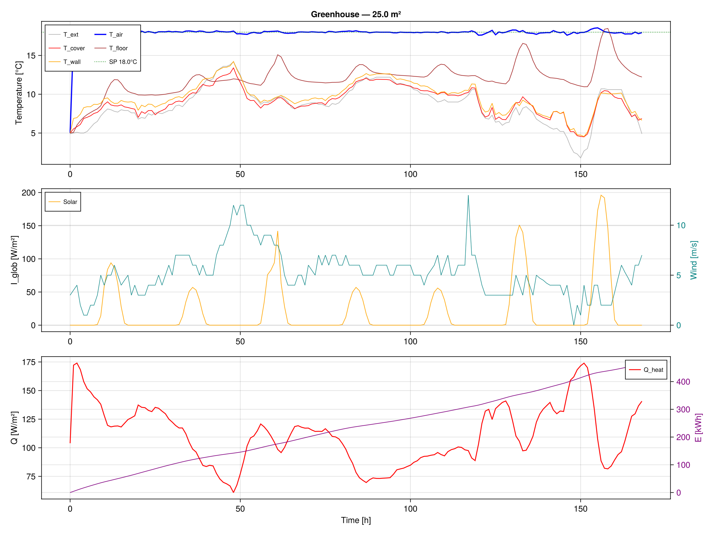

Tutorial: Heated Greenhouse with PI Controller
This tutorial adds a proportional-integral (PI) heating controller to maintain the indoor air at a target temperature.
PI controller parameters
The controller is defined by four values passed to GreenhouseParams:
| Parameter | Symbol | Value | Unit | Description |
|---|---|---|---|---|
Kp | $K_p$ | 100 × A | W/K | Proportional gain (total, not per m²) |
Ti | $T_i$ | 300 | s | Integral time constant |
T_sp | $T_{sp}$ | 289.15 | K | Setpoint (16 °C) |
Q_max | $Q_{max}$ | 200 × A | W | Saturation limit |
The heating power at each instant is:
\[Q_{heat} = \text{clamp}\left( K_p \cdot e + \frac{K_p}{T_i} \int_0^t e\,d\tau ,\; 0,\; Q_{max} \right)\]
where $e = T_{sp} - T_{air}$ is the temperature error.
Setup and simulation
using GreenhousesJL
using OrdinaryDiffEqTsit5
tmy = load_tmy("Greenhouses/Resources/Data/10Dec-22Nov.txt")
A = 14000.0
p = GreenhouseParams(tmy;
A = A,
Kp = 100.0 * A, # 100 W/(m².K) × 14000 m²
Ti = 300.0, # 5 minutes
T_sp = 289.15, # 16 °C
Q_max = 200.0 * A, # 200 W/m² × 14000 m²
)
u0 = initial_state(p; T0=278.15, T_soil0=276.15)
prob = ODEProblem(greenhouse_rhs!, u0, (0.0, 7*86400.0), p)
sol = solve(prob, Tsit5(); reltol=1e-6, saveat=3600.0)Extracting heating power
The PI integral is stored as the last state variable:
ns = n_soil(p)
ie_idx = 3 + ns + 1 # no walls → index = 3 + 6 + 1 = 10
Q_heat = map(1:length(sol.t)) do i
err = p.T_sp - sol[2, i]
ie = sol[ie_idx, i]
clamp(p.Kp * err + p.Kp / p.Ti * ie, 0, p.Q_max) / A # W/m²
endExpected results

| Metric | Value |
|---|---|
| Mean T_air | 16.00 °C (exact setpoint tracking) |
| Mean Q_heat | 42.8 W/m² |
| Total energy (7 days) | 7.2 kWh/m² |
| Ueff = Q / (Tair − T_out) | 6.1 W/(m²·K) |
| Simulation time | 5.3 ms |
The adaptive solver maintains the setpoint exactly at 16.00 °C because the PI equation is integrated continuously, unlike EnergyPlus where the discrete 1-minute time step introduces a residual offset of +0.28 °C.
Varying the setpoint
You can easily run a parametric study:
for T_sp_C in [14.0, 16.0, 18.0, 20.0]
p_i = GreenhouseParams(tmy; A=A, Kp=100A, Ti=300, T_sp=T_sp_C+273.15, Q_max=200A)
u0_i = initial_state(p_i)
sol_i = solve(ODEProblem(greenhouse_rhs!, u0_i, (0.0, 7*86400.0), p_i), Tsit5(); reltol=1e-6)
# ... extract energy, compute cost ...
endEach run takes ~5 ms, so a 100-point parametric sweep completes in 0.5 seconds.
Adding a realistic heating system
By default, heating is applied directly to the air (instantaneous, no losses). For realistic modeling with boilers, heat pumps, or CHP systems with pipe distribution networks:
p = GreenhouseParams(tmy;
A = 14000.0,
Kp = 100.0 * 14000,
Ti = 300.0,
T_sp = 289.15,
Q_max = 200.0 * 14000,
heating = HeatingConfig(Boiler(), StandardPipes()), # gas boiler + overhead pipes
)The pipe network adds thermal inertia (water mass) and position-dependent convection. See the Heating Systems tutorial for details.
Using crop-optimal setpoints
Instead of a fixed setpoint, use dynamic temperatures matching crop requirements:
cc = TomatoClimate()
T_sp_day = optimal_setpoint(t, I_glob, cc; crop_name="tomato") # 22-24 °CSee the Crop Climate tutorial for temperature profiles and productivity indices.